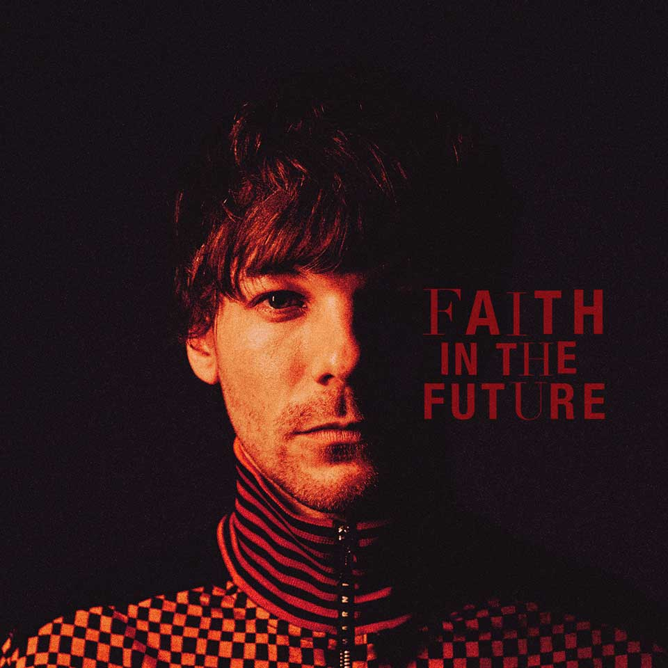
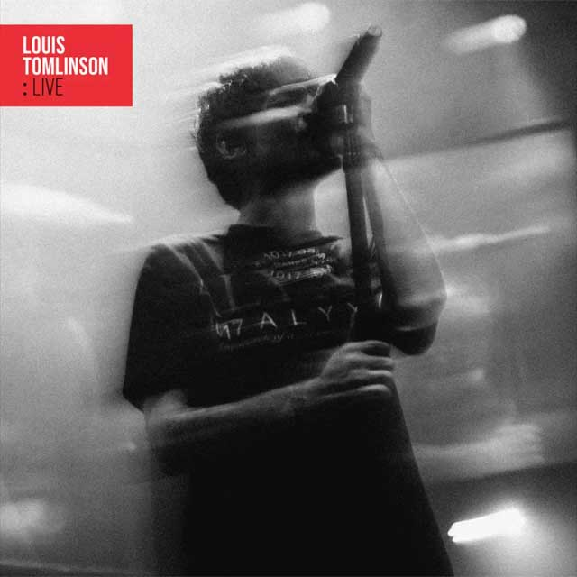

DISCOGRAFÍA
|  |  | |
| Walls (2020) | Faith in The Future (2022) | LIVE (2024) |
Además de sus álbumes, Louis desde los inicios de One Direction fue escritor y co-escritor de varias canciónes, Louis Tomlinson tiene créditos de haber escrito 12 de las 18 canciones del album Midnight Memories, álbum más vendido del año 2013.